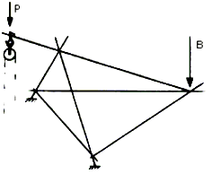
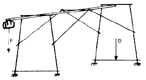

Im Sinne dieses Kapitels werden folgende Begriffe bestimmt:
| a) | Lastaufnahmemittel in Fahrbahnen geführt, z. B. Anstellaufzüge, Anlegeaufzüge, Schnellbauaufzüge, Schachtgerüstaufzüge, oder |
| b) | Lastaufnahmemittel oder Anschlagmittel ungeführt, an Tragmitteln hängend, z. B. Seilrollenaufzüge, Rahmenstützenaufzüge mit Ausleger, Schwenkarmaufzüge, |

